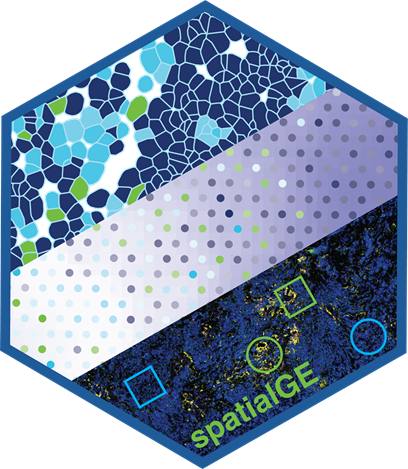
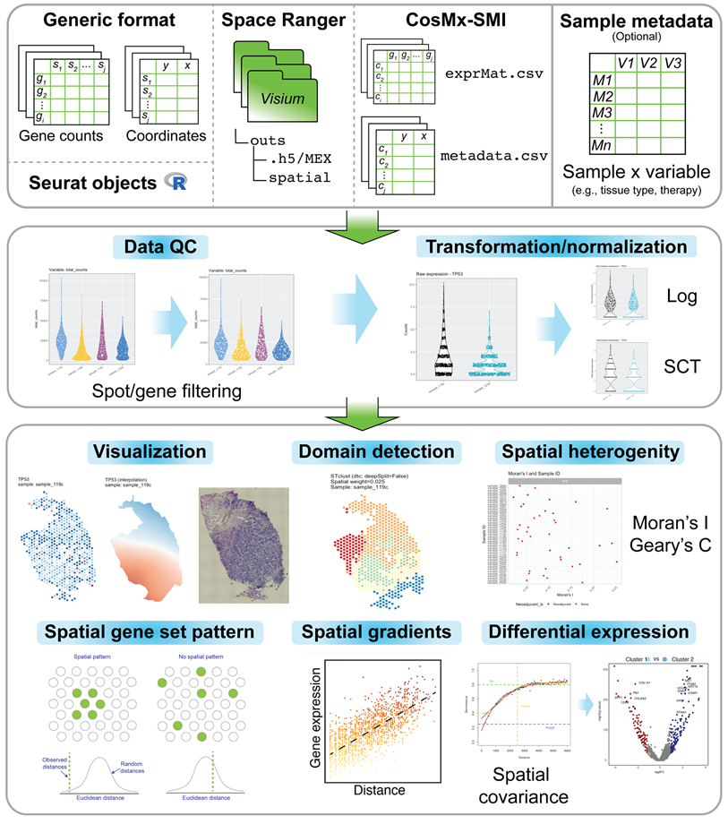

An R package for the visualization and analysis of spatially-resolved transcriptomics data, such as those generated with 10X Visium. The spatialGE package features a data object (STlist: Spatial Transctiptomics List) to store data and results from multiple tissue sections, as well as associated analytical methods for:
- Visualization:
STplot,gene_interpolation,STplot_interpolationto explore gene expression in spatial context. - Spatial autocorrelation:
SThet,compare_SThetto assess the level of spatial uniformity in gene expression by calculating Moran’s I and/or Geary’s C and qualitatively explore correlations with sample-level metadata (i.e., tissue type, therapy, disease status). - Tissue domain/niche detection:
STclustto perform spatially-informed hierarchical clustering for prediction of tissue domains in samples. - Gene set spatial enrichment:
STenrichto detect gene sets with indications of spatial patterns (i.e., non-spatially uniform gene set expression). - Gene expression spatial gradients:
STgradientto detect genes with evidence of variation in expression with respect to a tissue domain. - Spatially-informed differential expression:
STdiffto test for differentially expressed genes using mixed models with spatial covariance structures to account of spatial dependency among spots/cells. It also supports non-spatial tests (Wilcoxon’s and T-test).
The methods in the initial spatialGE release, technical details, and their utility are presented in this publication: https://doi.org/10.1093/bioinformatics/btac145. For details on the recently developed methods STenrich, STgradient, and STdiff please refer to the spatialGE documentation.

Installation
The spatialGE repository is available at GitHub and can be installed via devtools.
options(timeout=9999999) # To avoid R closing connection with GitHub
devtools::install_github("fridleylab/spatialGE")How to use spatialGE
For tutorials on how to use spatialGE, please go to: https://fridleylab.github.io/spatialGE/
The code for spatialGE can be found here: https://github.com/FridleyLab/spatialGE
Function naming (v2.0.0)
In version 2.0.0, the package refactored its input handling with a modular architecture. The primary function is now STlist (lowercase ‘l’). The legacy function STList_legacy has been preserved for reproducibility of older workflows but is superseded and deprecated.
New recommended function: STlist - modular, extensible implementation with platform-specific ingestors.
Deprecated but still available: STList_legacy - monolithic implementation preserved for backward compatibility.
spatialGE-Web
A point-and-click web application that allows using spatialGE without coding/scripting is available at https://spatialge.moffitt.org . The web app currently supports Visium outputs and csv/tsv gene expression files paired with csv/tsv coordinate files.
How to cite
When using spatialGE, please cite the following publication:
Ospina, O. E., Wilson C. M., Soupir, A. C., Berglund, A. Smalley, I., Tsai, K. Y., Fridley, B. L. 2022. spatialGE: quantification and visualization of the tumor microenvironment heterogeneity using spatial transcriptomics. Bioinformatics, 38:2645-2647. https://doi.org/10.1093/bioinformatics/btac145